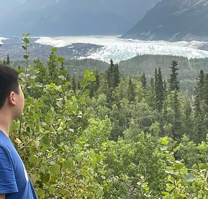

Hi, I'm Jumyu Xu, a Student from Clements High School.
Digital Lab Portfolio for AP Physics 1
This purpose of this website is to provide a university a comprehensive list of all of the laboratories completed in this course in the event they request evidence for college credit.